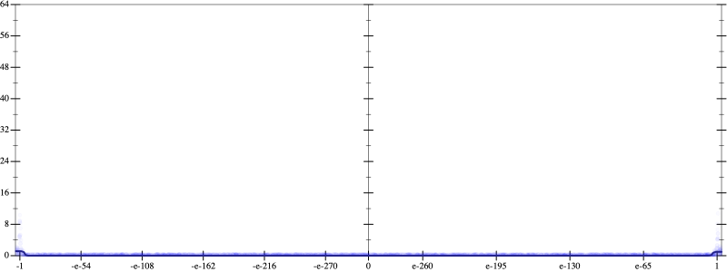
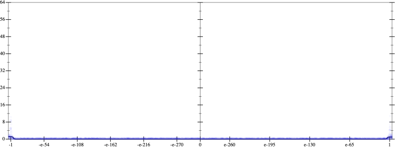

Initial program 0.0
\[\left(\left(\left(\left(\left(\left(-17297280.0 + 242161920.0 \cdot \left(x \cdot x\right)\right) + -484323840.0 \cdot \left(\left(\left(x \cdot x\right) \cdot x\right) \cdot x\right)\right) + 322882560.0 \cdot \left(\left(\left(\left(\left(x \cdot x\right) \cdot x\right) \cdot x\right) \cdot x\right) \cdot x\right)\right) + -92252160.0 \cdot \left(\left(\left(\left(\left(\left(\left(x \cdot x\right) \cdot x\right) \cdot x\right) \cdot x\right) \cdot x\right) \cdot x\right) \cdot x\right)\right) + 12300288.0 \cdot \left(\left(\left(\left(\left(\left(\left(\left(\left(x \cdot x\right) \cdot x\right) \cdot x\right) \cdot x\right) \cdot x\right) \cdot x\right) \cdot x\right) \cdot x\right) \cdot x\right)\right) + -745472.0 \cdot \left(\left(\left(\left(\left(\left(\left(\left(\left(\left(\left(x \cdot x\right) \cdot x\right) \cdot x\right) \cdot x\right) \cdot x\right) \cdot x\right) \cdot x\right) \cdot x\right) \cdot x\right) \cdot x\right) \cdot x\right)\right) + 16384.0 \cdot \left(\left(\left(\left(\left(\left(\left(\left(\left(\left(\left(\left(\left(x \cdot x\right) \cdot x\right) \cdot x\right) \cdot x\right) \cdot x\right) \cdot x\right) \cdot x\right) \cdot x\right) \cdot x\right) \cdot x\right) \cdot x\right) \cdot x\right) \cdot x\right)\]
Taylor expanded around 0 0.0
\[\leadsto \left(\left(\left(\left(\left(\left(-17297280.0 + 242161920.0 \cdot \left(x \cdot x\right)\right) + \color{blue}{-484323840.0 \cdot {x}^{4}}\right) + 322882560.0 \cdot \left(\left(\left(\left(\left(x \cdot x\right) \cdot x\right) \cdot x\right) \cdot x\right) \cdot x\right)\right) + -92252160.0 \cdot \left(\left(\left(\left(\left(\left(\left(x \cdot x\right) \cdot x\right) \cdot x\right) \cdot x\right) \cdot x\right) \cdot x\right) \cdot x\right)\right) + 12300288.0 \cdot \left(\left(\left(\left(\left(\left(\left(\left(\left(x \cdot x\right) \cdot x\right) \cdot x\right) \cdot x\right) \cdot x\right) \cdot x\right) \cdot x\right) \cdot x\right) \cdot x\right)\right) + -745472.0 \cdot \left(\left(\left(\left(\left(\left(\left(\left(\left(\left(\left(x \cdot x\right) \cdot x\right) \cdot x\right) \cdot x\right) \cdot x\right) \cdot x\right) \cdot x\right) \cdot x\right) \cdot x\right) \cdot x\right) \cdot x\right)\right) + 16384.0 \cdot \left(\left(\left(\left(\left(\left(\left(\left(\left(\left(\left(\left(\left(x \cdot x\right) \cdot x\right) \cdot x\right) \cdot x\right) \cdot x\right) \cdot x\right) \cdot x\right) \cdot x\right) \cdot x\right) \cdot x\right) \cdot x\right) \cdot x\right) \cdot x\right)\]
Applied simplify0.0
\[\leadsto \color{blue}{\left(\left(\left({x}^{4} \cdot -484323840.0 + x \cdot \left(x \cdot 242161920.0\right)\right) + \left(\left(x \cdot x\right) \cdot \left(x \cdot x\right)\right) \cdot \left(\left(x \cdot x\right) \cdot 322882560.0\right)\right) + -17297280.0\right) + \left(\left(\left(\left(x \cdot x\right) \cdot \left(x \cdot x\right)\right) \cdot \left(\left(x \cdot x\right) \cdot \left(x \cdot x\right)\right)\right) \cdot \left(\left(x \cdot x\right) \cdot 12300288.0 + -92252160.0\right) + \left(\left(\left(\left(x \cdot x\right) \cdot \left(x \cdot x\right)\right) \cdot \left(\left(x \cdot x\right) \cdot \left(x \cdot x\right)\right)\right) \cdot \left(\left(x \cdot x\right) \cdot \left(x \cdot x\right)\right)\right) \cdot \left(-745472.0 + 16384.0 \cdot \left(x \cdot x\right)\right)\right)}\]
Taylor expanded around 0 0.0
\[\leadsto \left(\left(\left({x}^{4} \cdot -484323840.0 + x \cdot \left(x \cdot 242161920.0\right)\right) + \left(\left(x \cdot x\right) \cdot \left(x \cdot x\right)\right) \cdot \color{blue}{\left(322882560.0 \cdot {x}^{2}\right)}\right) + -17297280.0\right) + \left(\left(\left(\left(x \cdot x\right) \cdot \left(x \cdot x\right)\right) \cdot \left(\left(x \cdot x\right) \cdot \left(x \cdot x\right)\right)\right) \cdot \left(\left(x \cdot x\right) \cdot 12300288.0 + -92252160.0\right) + \left(\left(\left(\left(x \cdot x\right) \cdot \left(x \cdot x\right)\right) \cdot \left(\left(x \cdot x\right) \cdot \left(x \cdot x\right)\right)\right) \cdot \left(\left(x \cdot x\right) \cdot \left(x \cdot x\right)\right)\right) \cdot \left(-745472.0 + 16384.0 \cdot \left(x \cdot x\right)\right)\right)\]
Applied simplify0.0
\[\leadsto \color{blue}{\left(\left(\left({x}^{3} \cdot {x}^{3}\right) \cdot \left({x}^{3} \cdot {x}^{3}\right)\right) \cdot \left(-745472.0 + x \cdot \left(16384.0 \cdot x\right)\right) + \left(x \cdot \left(242161920.0 \cdot x\right) + {x}^{4} \cdot -484323840.0\right)\right) + \left(\left(\left(\left(x \cdot x\right) \cdot \left(x \cdot x\right)\right) \cdot \left(322882560.0 \cdot \left(x \cdot x\right)\right) + -17297280.0\right) + \left(\left(12300288.0 \cdot x\right) \cdot x + -92252160.0\right) \cdot {\left(x \cdot x\right)}^{\left(3 + 1\right)}\right)}\]
- Using strategy
rm Applied add-cbrt-cube0.0
\[\leadsto \left(\left(\left({x}^{3} \cdot {x}^{3}\right) \cdot \left({x}^{3} \cdot {x}^{3}\right)\right) \cdot \color{blue}{\sqrt[3]{\left(\left(-745472.0 + x \cdot \left(16384.0 \cdot x\right)\right) \cdot \left(-745472.0 + x \cdot \left(16384.0 \cdot x\right)\right)\right) \cdot \left(-745472.0 + x \cdot \left(16384.0 \cdot x\right)\right)}} + \left(x \cdot \left(242161920.0 \cdot x\right) + {x}^{4} \cdot -484323840.0\right)\right) + \left(\left(\left(\left(x \cdot x\right) \cdot \left(x \cdot x\right)\right) \cdot \left(322882560.0 \cdot \left(x \cdot x\right)\right) + -17297280.0\right) + \left(\left(12300288.0 \cdot x\right) \cdot x + -92252160.0\right) \cdot {\left(x \cdot x\right)}^{\left(3 + 1\right)}\right)\]
Applied add-cbrt-cube0.0
\[\leadsto \left(\left(\left({x}^{3} \cdot {x}^{3}\right) \cdot \left({x}^{3} \cdot \color{blue}{\sqrt[3]{\left({x}^{3} \cdot {x}^{3}\right) \cdot {x}^{3}}}\right)\right) \cdot \sqrt[3]{\left(\left(-745472.0 + x \cdot \left(16384.0 \cdot x\right)\right) \cdot \left(-745472.0 + x \cdot \left(16384.0 \cdot x\right)\right)\right) \cdot \left(-745472.0 + x \cdot \left(16384.0 \cdot x\right)\right)} + \left(x \cdot \left(242161920.0 \cdot x\right) + {x}^{4} \cdot -484323840.0\right)\right) + \left(\left(\left(\left(x \cdot x\right) \cdot \left(x \cdot x\right)\right) \cdot \left(322882560.0 \cdot \left(x \cdot x\right)\right) + -17297280.0\right) + \left(\left(12300288.0 \cdot x\right) \cdot x + -92252160.0\right) \cdot {\left(x \cdot x\right)}^{\left(3 + 1\right)}\right)\]
Applied add-cbrt-cube0.0
\[\leadsto \left(\left(\left({x}^{3} \cdot {x}^{3}\right) \cdot \left(\color{blue}{\sqrt[3]{\left({x}^{3} \cdot {x}^{3}\right) \cdot {x}^{3}}} \cdot \sqrt[3]{\left({x}^{3} \cdot {x}^{3}\right) \cdot {x}^{3}}\right)\right) \cdot \sqrt[3]{\left(\left(-745472.0 + x \cdot \left(16384.0 \cdot x\right)\right) \cdot \left(-745472.0 + x \cdot \left(16384.0 \cdot x\right)\right)\right) \cdot \left(-745472.0 + x \cdot \left(16384.0 \cdot x\right)\right)} + \left(x \cdot \left(242161920.0 \cdot x\right) + {x}^{4} \cdot -484323840.0\right)\right) + \left(\left(\left(\left(x \cdot x\right) \cdot \left(x \cdot x\right)\right) \cdot \left(322882560.0 \cdot \left(x \cdot x\right)\right) + -17297280.0\right) + \left(\left(12300288.0 \cdot x\right) \cdot x + -92252160.0\right) \cdot {\left(x \cdot x\right)}^{\left(3 + 1\right)}\right)\]
Applied cbrt-unprod0.0
\[\leadsto \left(\left(\left({x}^{3} \cdot {x}^{3}\right) \cdot \color{blue}{\sqrt[3]{\left(\left({x}^{3} \cdot {x}^{3}\right) \cdot {x}^{3}\right) \cdot \left(\left({x}^{3} \cdot {x}^{3}\right) \cdot {x}^{3}\right)}}\right) \cdot \sqrt[3]{\left(\left(-745472.0 + x \cdot \left(16384.0 \cdot x\right)\right) \cdot \left(-745472.0 + x \cdot \left(16384.0 \cdot x\right)\right)\right) \cdot \left(-745472.0 + x \cdot \left(16384.0 \cdot x\right)\right)} + \left(x \cdot \left(242161920.0 \cdot x\right) + {x}^{4} \cdot -484323840.0\right)\right) + \left(\left(\left(\left(x \cdot x\right) \cdot \left(x \cdot x\right)\right) \cdot \left(322882560.0 \cdot \left(x \cdot x\right)\right) + -17297280.0\right) + \left(\left(12300288.0 \cdot x\right) \cdot x + -92252160.0\right) \cdot {\left(x \cdot x\right)}^{\left(3 + 1\right)}\right)\]
Applied add-cbrt-cube0.0
\[\leadsto \left(\left(\left({x}^{3} \cdot \color{blue}{\sqrt[3]{\left({x}^{3} \cdot {x}^{3}\right) \cdot {x}^{3}}}\right) \cdot \sqrt[3]{\left(\left({x}^{3} \cdot {x}^{3}\right) \cdot {x}^{3}\right) \cdot \left(\left({x}^{3} \cdot {x}^{3}\right) \cdot {x}^{3}\right)}\right) \cdot \sqrt[3]{\left(\left(-745472.0 + x \cdot \left(16384.0 \cdot x\right)\right) \cdot \left(-745472.0 + x \cdot \left(16384.0 \cdot x\right)\right)\right) \cdot \left(-745472.0 + x \cdot \left(16384.0 \cdot x\right)\right)} + \left(x \cdot \left(242161920.0 \cdot x\right) + {x}^{4} \cdot -484323840.0\right)\right) + \left(\left(\left(\left(x \cdot x\right) \cdot \left(x \cdot x\right)\right) \cdot \left(322882560.0 \cdot \left(x \cdot x\right)\right) + -17297280.0\right) + \left(\left(12300288.0 \cdot x\right) \cdot x + -92252160.0\right) \cdot {\left(x \cdot x\right)}^{\left(3 + 1\right)}\right)\]
Applied add-cbrt-cube0.0
\[\leadsto \left(\left(\left(\color{blue}{\sqrt[3]{\left({x}^{3} \cdot {x}^{3}\right) \cdot {x}^{3}}} \cdot \sqrt[3]{\left({x}^{3} \cdot {x}^{3}\right) \cdot {x}^{3}}\right) \cdot \sqrt[3]{\left(\left({x}^{3} \cdot {x}^{3}\right) \cdot {x}^{3}\right) \cdot \left(\left({x}^{3} \cdot {x}^{3}\right) \cdot {x}^{3}\right)}\right) \cdot \sqrt[3]{\left(\left(-745472.0 + x \cdot \left(16384.0 \cdot x\right)\right) \cdot \left(-745472.0 + x \cdot \left(16384.0 \cdot x\right)\right)\right) \cdot \left(-745472.0 + x \cdot \left(16384.0 \cdot x\right)\right)} + \left(x \cdot \left(242161920.0 \cdot x\right) + {x}^{4} \cdot -484323840.0\right)\right) + \left(\left(\left(\left(x \cdot x\right) \cdot \left(x \cdot x\right)\right) \cdot \left(322882560.0 \cdot \left(x \cdot x\right)\right) + -17297280.0\right) + \left(\left(12300288.0 \cdot x\right) \cdot x + -92252160.0\right) \cdot {\left(x \cdot x\right)}^{\left(3 + 1\right)}\right)\]
Applied cbrt-unprod0.0
\[\leadsto \left(\left(\color{blue}{\sqrt[3]{\left(\left({x}^{3} \cdot {x}^{3}\right) \cdot {x}^{3}\right) \cdot \left(\left({x}^{3} \cdot {x}^{3}\right) \cdot {x}^{3}\right)}} \cdot \sqrt[3]{\left(\left({x}^{3} \cdot {x}^{3}\right) \cdot {x}^{3}\right) \cdot \left(\left({x}^{3} \cdot {x}^{3}\right) \cdot {x}^{3}\right)}\right) \cdot \sqrt[3]{\left(\left(-745472.0 + x \cdot \left(16384.0 \cdot x\right)\right) \cdot \left(-745472.0 + x \cdot \left(16384.0 \cdot x\right)\right)\right) \cdot \left(-745472.0 + x \cdot \left(16384.0 \cdot x\right)\right)} + \left(x \cdot \left(242161920.0 \cdot x\right) + {x}^{4} \cdot -484323840.0\right)\right) + \left(\left(\left(\left(x \cdot x\right) \cdot \left(x \cdot x\right)\right) \cdot \left(322882560.0 \cdot \left(x \cdot x\right)\right) + -17297280.0\right) + \left(\left(12300288.0 \cdot x\right) \cdot x + -92252160.0\right) \cdot {\left(x \cdot x\right)}^{\left(3 + 1\right)}\right)\]
Applied cbrt-unprod0.0
\[\leadsto \left(\color{blue}{\sqrt[3]{\left(\left(\left({x}^{3} \cdot {x}^{3}\right) \cdot {x}^{3}\right) \cdot \left(\left({x}^{3} \cdot {x}^{3}\right) \cdot {x}^{3}\right)\right) \cdot \left(\left(\left({x}^{3} \cdot {x}^{3}\right) \cdot {x}^{3}\right) \cdot \left(\left({x}^{3} \cdot {x}^{3}\right) \cdot {x}^{3}\right)\right)}} \cdot \sqrt[3]{\left(\left(-745472.0 + x \cdot \left(16384.0 \cdot x\right)\right) \cdot \left(-745472.0 + x \cdot \left(16384.0 \cdot x\right)\right)\right) \cdot \left(-745472.0 + x \cdot \left(16384.0 \cdot x\right)\right)} + \left(x \cdot \left(242161920.0 \cdot x\right) + {x}^{4} \cdot -484323840.0\right)\right) + \left(\left(\left(\left(x \cdot x\right) \cdot \left(x \cdot x\right)\right) \cdot \left(322882560.0 \cdot \left(x \cdot x\right)\right) + -17297280.0\right) + \left(\left(12300288.0 \cdot x\right) \cdot x + -92252160.0\right) \cdot {\left(x \cdot x\right)}^{\left(3 + 1\right)}\right)\]
Applied cbrt-unprod0.0
\[\leadsto \left(\color{blue}{\sqrt[3]{\left(\left(\left(\left({x}^{3} \cdot {x}^{3}\right) \cdot {x}^{3}\right) \cdot \left(\left({x}^{3} \cdot {x}^{3}\right) \cdot {x}^{3}\right)\right) \cdot \left(\left(\left({x}^{3} \cdot {x}^{3}\right) \cdot {x}^{3}\right) \cdot \left(\left({x}^{3} \cdot {x}^{3}\right) \cdot {x}^{3}\right)\right)\right) \cdot \left(\left(\left(-745472.0 + x \cdot \left(16384.0 \cdot x\right)\right) \cdot \left(-745472.0 + x \cdot \left(16384.0 \cdot x\right)\right)\right) \cdot \left(-745472.0 + x \cdot \left(16384.0 \cdot x\right)\right)\right)}} + \left(x \cdot \left(242161920.0 \cdot x\right) + {x}^{4} \cdot -484323840.0\right)\right) + \left(\left(\left(\left(x \cdot x\right) \cdot \left(x \cdot x\right)\right) \cdot \left(322882560.0 \cdot \left(x \cdot x\right)\right) + -17297280.0\right) + \left(\left(12300288.0 \cdot x\right) \cdot x + -92252160.0\right) \cdot {\left(x \cdot x\right)}^{\left(3 + 1\right)}\right)\]
Applied simplify0.0
\[\leadsto \left(\sqrt[3]{\color{blue}{\left(\left(16384.0 \cdot \left(x \cdot x\right) + -745472.0\right) \cdot {\left({\left({x}^{3}\right)}^{3}\right)}^{\left(3 + 1\right)}\right) \cdot \left(\left(16384.0 \cdot \left(x \cdot x\right) + -745472.0\right) \cdot \left(16384.0 \cdot \left(x \cdot x\right) + -745472.0\right)\right)}} + \left(x \cdot \left(242161920.0 \cdot x\right) + {x}^{4} \cdot -484323840.0\right)\right) + \left(\left(\left(\left(x \cdot x\right) \cdot \left(x \cdot x\right)\right) \cdot \left(322882560.0 \cdot \left(x \cdot x\right)\right) + -17297280.0\right) + \left(\left(12300288.0 \cdot x\right) \cdot x + -92252160.0\right) \cdot {\left(x \cdot x\right)}^{\left(3 + 1\right)}\right)\]
 
